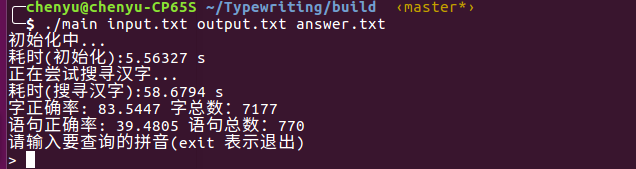
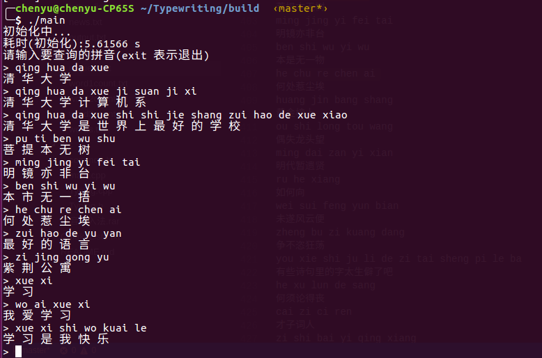

测试集采用网络学堂上采集的测试集，最终字的正确率为 ,句子的正确率为。
算法运行依赖的文件大小约200M，初始化大约5秒钟，查询一条语句大约0.5秒钟;批量处理的时候使用了多线程进行优化。
最终算法采用三元概率模型。
首先，整理新闻，分别统计出单个字，两个字和三个字出现的次数;根据贝叶斯公式：
可以通过频率可以计算出已知前两个字，第三个字出现的概率;
最终，一种方案的得分即使：
然后，根据这个公式，选择一种最优的方案;注意到上面的公式是可以使用动态规划来加速的，所以最终实现的过程中使用了动态规划。
同时，对于建出的索引，由于有很多出现次数非常小的组合，所以在实际的算法中，对索引进行了过滤，一方面可以减少索引的大小，另一方面可以加速搜索的过程。
在实现输入法算法的过程中，也探索了一些其他算法;
首先实验了二元概率算法，其根据是下面两个公式：
这两个公式和上面三元的公式非常相似，实际算法实现的过程也很像，最终字的正确率大约，语句的正确率大约。
其次，尝试使用词语进行优化，但无奈没有找到合适的数学模型，最终最高的语句正确率只有。
没有考虑多音字，实际上在计算概率P的时候，应该考虑上字的发音
没有考虑词性
了解了拼音输入法的实现原理
get了一波C++11和多线程的技能